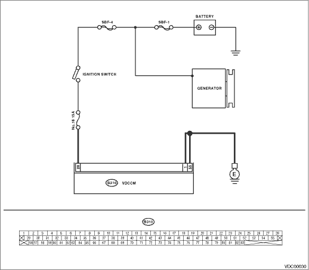

DTC DETECTING CONDITION:
• Power voltage for VDCCM is low.
• VDCCM voltage is too high. (Warning lights go off if voltage returns.)
TROUBLE SYMPTOM:
• ABS does not operate.
• VDC does not operate.
• EBD does not operate. (When the voltage is excessively low or high)
NOTE:
At this time, the brake warning light illuminates as well as the VDC and ABS warning light.
WIRING DIAGRAM:


| STEP | CHECK | YES | NO |
|
Is the voltage 10 — 15 V? |
|
Repair the generator. |
|
|
Are the positive and negative battery terminals clamped tightly? |
|
Tighten the clamp of terminal. |
|
|
Is the voltage 10 — 15 V? |
|
Repair the harness connectors between the battery, ignition switch and VDCCM. |
|
|
Is the resistance less than 0.5 Ω? |
|
Repair the VDCCM ground harness. |
|
|
Is there poor contact in connectors between generator, battery and VDCCM? |
Repair the connector. |
|
|
|
Is the same DTC displayed again? |
Replace the VDCCM. |
|
|
|
Are other DTCs displayed? |
Go to the diagnosis corresponding to the DTC. |
Temporary poor contact occurs. |